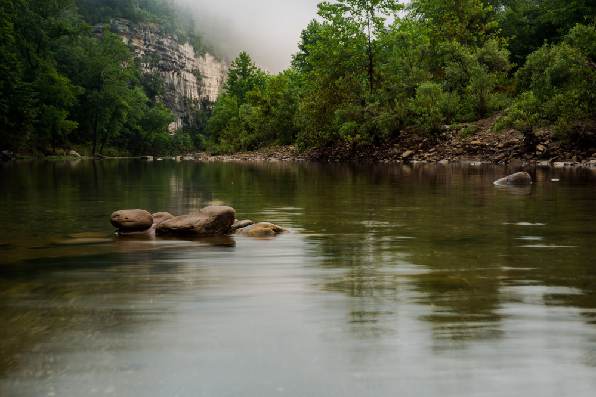
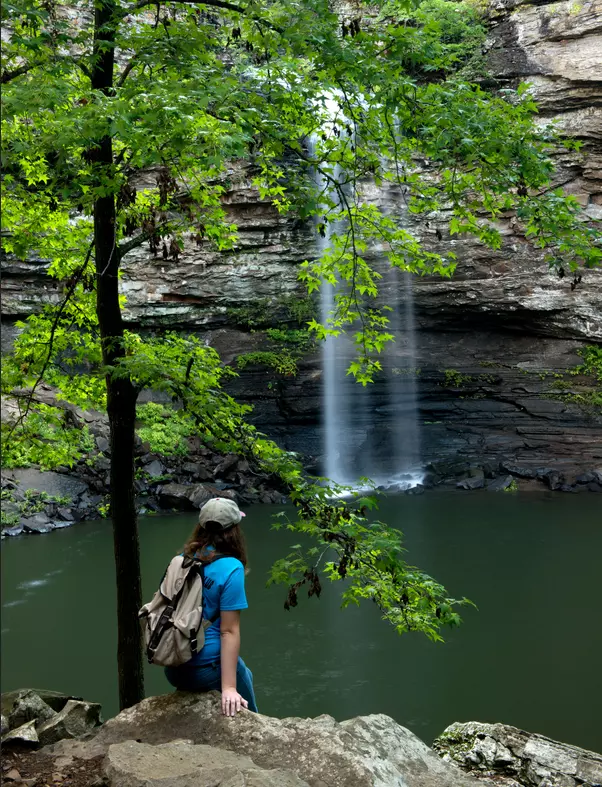
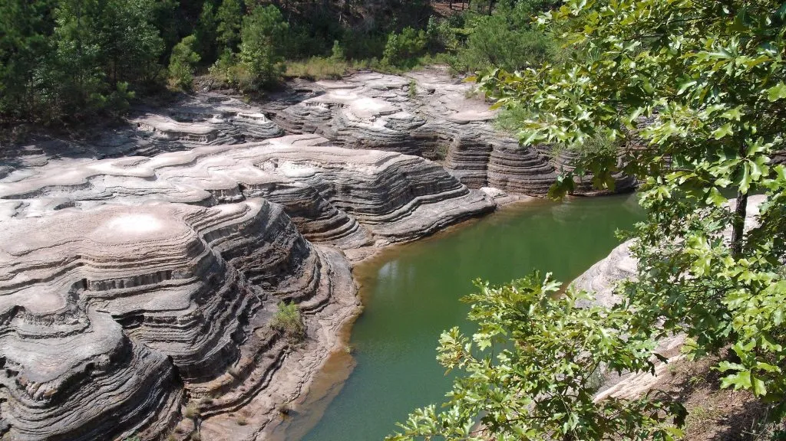
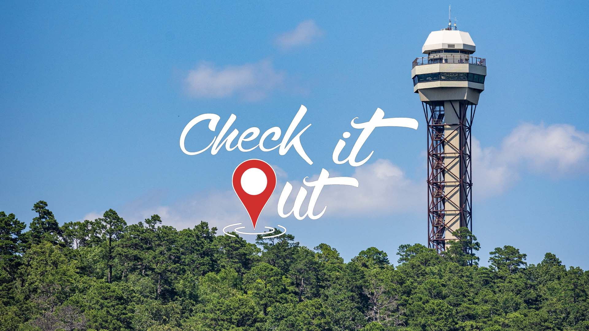
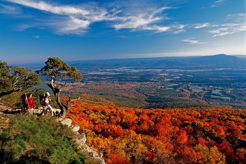
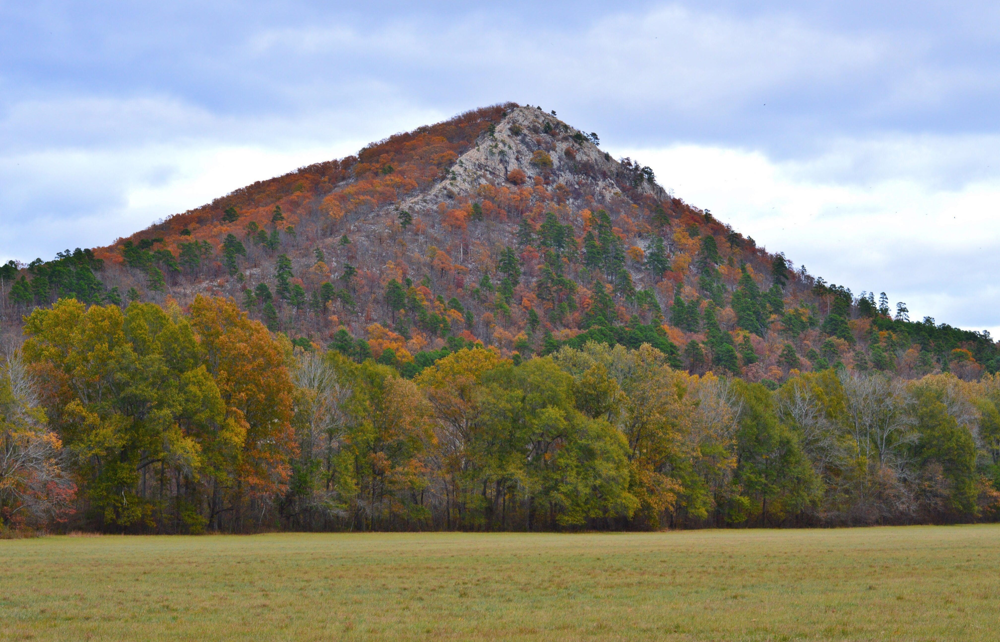
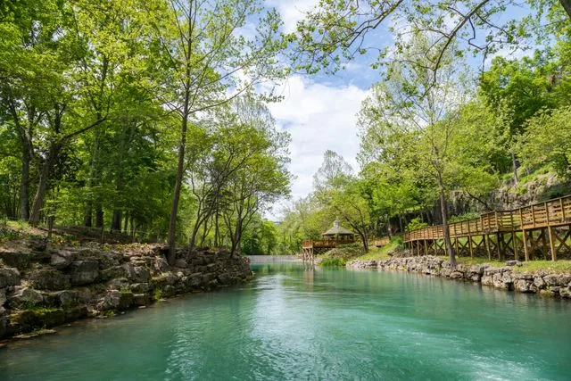
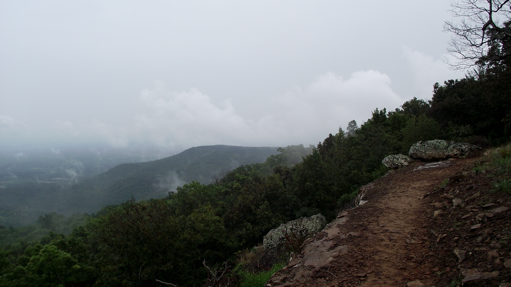

1. Buffalo National River
America’s First National River. The Buffalo is the crown jewel of Arkansas
outdoors. It is best known for its massive limestone bluffs that tower
over the water. It offers some of the best floating (kayak/canoe) in the
country. If you aren't on the water, the Center point to Big Bluff trail
offers a goat-trail view that is legendary among hikers.

2. Petit Jean State Park
Located near the city of Morrilton, this is a little piece of heaven on earth. Its natural
log and stone facilities were constructed by the Civilian Conservation Corp in 1933. This
state park features more than 80 structures, trails and bridges with the focal point being the
Adirondack-style historic Mather Lodge that overlooks the river valley below that includes the
rugged Cedar Creek Canyon at the base of the canyon floor where hikers congregate to marvel at
the huge waterfall that flows over the top of the canyon rocks.

3. Arkansas Grand Canyon
The Deepest Valley in the Ozarks. Located near the town of Jasper along Scenic Byway 7, this wide,
sweeping valley mimics the scale of its namesake in Arizona. It is the ultimate roadside stop.
You don't even have to hike to see it; the overlooks near the Cliff House Inn offer panoramic
views that are especially stunning during the fall foliage season.

4. Devil's Den
A Journey into Ozark Geology. This park is famous for its unique sandstone crevices and crevice caves.
The Yellow Rock Trail provides an iconic overlook of the Lee Creek Valley. It’s also a masterpiece of Civilian
Conservation Corps (CCC) architecture, with beautiful hand-cut stone cabins and bridges that blend into the mountains.

5. Hot Springs National Park
The American Spa.Unlike most national parks, this one is tucked right into a historic downtown.
It protects 47 thermal springs that have been used for centuries. You can walk Bathhouse Row to
see stunning Gilded Age architecture, then hike up to the Hot Springs Mountain Tower for a
360-degree view of the Ouachita Mountains.

6. Mount Magazine State Park
The Highest Point in Arkansas.Standing at 2,753 feet, Mount Magazine is a "mesa" mountain that
rises out of the river valley. The view from Signal Hill (the high point) is a bucket-list item,
but the park is also a premier destination for hang gliding and rock climbing due to its steep,
dramatic bluffs.

7. Pinnacle Mountain
The Gateway to Adventure. Located just outside Little Rock, this cone-shaped peak is the most recognizable
landmark in Central Arkansas. It offers a challenge for every level. The West Summit is
a popular, rocky climb, while the East Summit is a rugged scramble for those looking for a workout. The view
of the Arkansas River from the top is unbeatable at sunset.

8. Eureka Springs
The Victorian Village. This town is built into steep Ozark hillsides, with winding streets where no two roads
intersect at a 90-degree angle. It’s a mix of history, art, and the paranormal. Between
the Thorncrown Chapel (a glass architectural marvel) and the haunted Crescent Hotel, it’s the most culturally
unique town in the state.

9. Mount Nebo State Park
Sunset Views & Monument Trails. Nebo is a flat-topped mountain that sits high above the Arkansas River Valley.
It features the Rim Trail, which circles the entire top of the mountain. It’s also home
to some of the best mountain biking in the state and is famous for its "Bench Trail" and the hair-raising
switchbacks you have to drive to reach the top.

10. Talimena Scenic Byway
The Ultimate Ridge-Runner Drive. This 54-mile route travels the crest of Rich Mountain and Winding Stair Mountain.
It’s designed specifically for the views. With 22 scenic pull-offs, it’s the best way to see the "blue" ridges of
the Ouachita National Forest. The Arkansas side includes Queen Wilhelmina State Park, known as the "Castle in the Clouds."